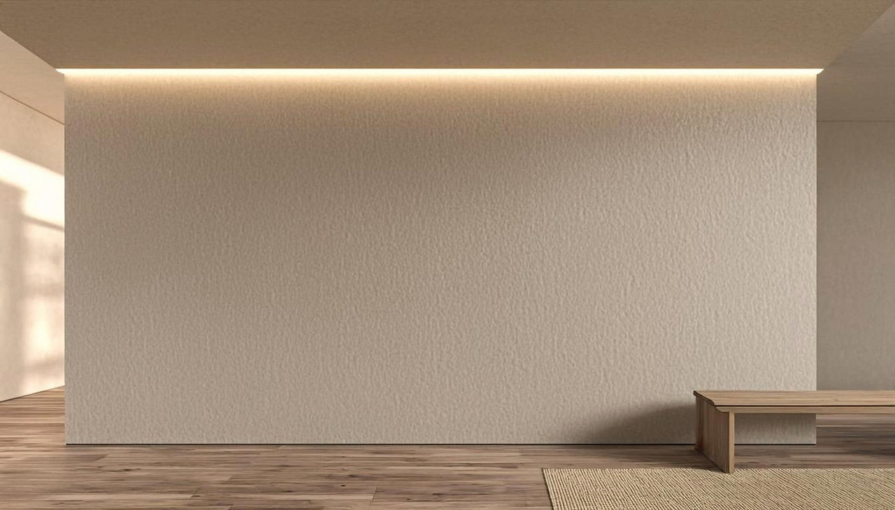

Colours Inspired by Nature.
Explore the Signature and Premium shade collections supplied for Gaurikrit Prakritik Paint — every shade name and code exactly as printed on the client shade card, previewed live on the wall.
See a shade on the wall.
Select any shade below — only the wall plane changes. The door, window and surroundings stay exactly as they are.

Selected shade
—
—
Signature and Premium are two separate client-supplied collections. Every swatch shows the shade name and its card code.
Twelve signature shades.
The Signature Collection as printed on the client shade card — codes GK-101 to GK-112.
About these previews
Digital previews are indicative. Actual colour may vary with surface, application, lighting and display.
Signature and Premium are two separate shade collections supplied by Gaurikrit. Shade names and codes are shown exactly as printed on the shade card — confirm physical shade cards, availability across the Distemper and Emulsion formats, and current stock with Gaurikrit before specifying. Ask about shade availability →
Colours for the Eco-Paints family.
These collections belong to Gaurikrit's documented Eco-Paints direction — Prakritik Distemper and Prakritik Emulsion, finished in a natural matt.